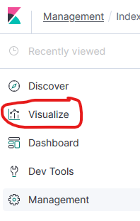
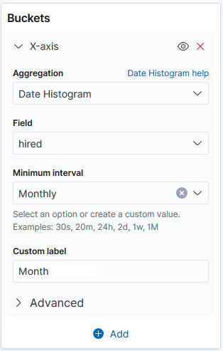
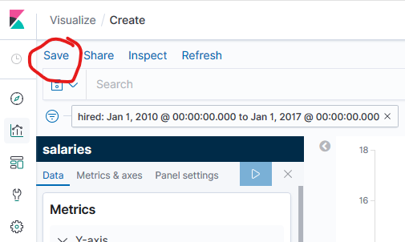

Exercise 5: Kibana visualizations¶
The purpose of this exercise is to use the data visualization capabilities of Kibana.
Screenshots
The following exercises will ask you to create visualizations, then export their Kibana description as JSON, as well as create a screenshot of the visualization itself. When creating the screenshot, make sure the entire visualization with the legend is visible.
Create an Index pattern¶
Our first step is to tell Kibana which indexes it should consider when creating the visualizations.
-
Click on the Visualize tab on the left side menu.

When opening this page the first time, you will be redirected to the Management / Index patterns configuration page to create a new index pattern.
-
Enter the index name —
salaries— as the index pattern. Make sure Kibana says Success! Your pattern matches 1 index, and click Next step.
-
Select I don't want to use the Time Filter as Time Filter field name since we are not going to use this function during the exercises. Click on Create index pattern.

-
Now click on the Visualize tab again to see the following.

a) How many people did the companies hire each month between 2010 and 2016? (vertical bar chart)¶
-
Click on the Create new visualization button on the Visualize tab, and select Vertical Bar.

-
Select the previously created
salariesindex pattern as the search source.
-
Under the Metrics setting set People hired as the Custom Label. (Expand the Y-axis label to get the configuration options.)

-
Under the Buckets setting click Add then select X-Axis, and set the following.
- Aggregation should be Date Histogram
- Field should be
hired - Minimum interval should be Monthly
- Custom Label should be Month.

-
In the top left corner click on the Add a filter link and use the following settings to create the filter. Click on Save to save the filter.

-
The configuration of the visualization is now ready. You see the preview of the visualization to the right. Click on the Save button to save the visualization as
5_a.
SUBMISSION
Create a screenshot of the visualization preview and save it as
ex5-a.png.Click on the Management tab in the left side menu, and choose the Saved Objects option. Select and export the visualization you just saved. No need to include related objects. Save the downloaded file as
ex5-a.ndjson.
b) Show the gender and age distribution of the workers! (pie chart)¶
-
Go back to the Visualize tab. It will likely load the last visualization. Click on the tab button again to get back to the landing page of all visualizations.
-
Click on the Create visualization button on the Visualize tab, and select Pie.
-
Select the previously created
salariesindex pattern as the search source. -
Under the Buckets setting click Add and select Split Slices and set a Terms aggregation on the
genderfield. As Custom Label set Gender.
-
Within the Buckets configuration area click on the Add button and select Split Slices with a Range aggregation on the
agefield with the following ranges. Also add a custom label Age.
SUBMISSION
Create a screenshot of the resulting visualization and save it as ex5-b.png. Use the previous method to save and export the visualization. Save the exported file as ex5-b.ndjson.
c) Show the distribution of the workers' locations on a map!¶
-
Create a new visualization of type Region Map. Select the previously created
salariesindex pattern as the search source. -
Under the Buckets setting add a Shape field with Terms aggregation on the
address.statefield. Make sure to set the Size value to at least 50.
-
Under Options / Layer Settings select USA States as Vector map and FIPS 5-2 alpha code as Join field.

SUBMISSION
Create a screenshot of the result and save it as ex5-c.png. Save and export the visualization. Save the exported file as ex5-c.ndjson.